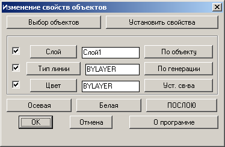
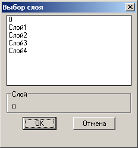
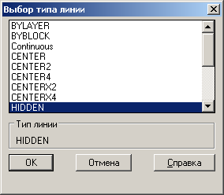
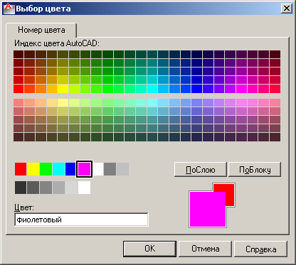

DCH
Выполняет редактирование свойств для объектов

Рисунок 1 - Главное окно программы DCH
Кнопки главного окна
- Выбор объектов - скрывает главное окно и позволяет выбрать примитивы для операции;
- Установить свойства - выполняет сутановку свойств для выбранных объектов;
- Слой - вызывает диалоговое окно для выбора слоя;
- Тип линии - вызывает диалоговое окно для выбора типалинии;
- Цвет - вызывает стандартный диалог AutoCAD для выбора цвета;
- По объекту - скрывает главное окно диалога, позволяя выбрать примитив, свойства которого будут устанавливаться для выбранных примитивов;
- По генерации - устанавливает в качестве свойств для примитивов текущие свойства генерации примитивов (текущий слой CLAYER, текущий цвет CECOLOR, текущий тип линии CELTYPE);
- Уст. св-ва - устанавливает слой, цвет и тип линии, заданные в полях ввода, в качестве текущих свойств для генерации объектов (эти изменения не будут заметны до завершения команды DCH);
- Осевая - устанавливает цвет в белый, тип линии в CENTER;
- Белая - устанавливает цвет в белый;
- ПОСЛОЮ - устанавливает цвет и тип линии ПОСЛОЮ;
Результирующее действие
Для набора выбора, выбранного при помощи кнопки Выбор объектов устанавливаются свойства, заключенные в полях ввода,
если в соответствующей строке установлен флажок выполнения.

Рисунок 2 - Выбор слоя

Рисунок 3 - Выбор типа линии

Рисунок 4 - Стандартный диалог выбора цвета
К оглавлению....